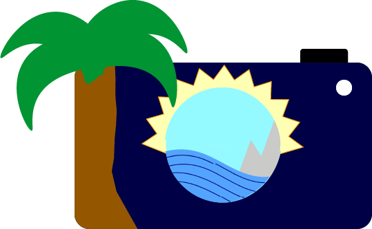

Eerste idee
Een ander student gaf mij het idee om de branding te doen voor een eigen luchtvaartmaatschappij. Ik dacht
aan een airline die bedoelt is voor studenten in de schoolvakantie die betaalbaar zijn, want meestal worden
de vliegtickets verhoogd in die periodes. En studenten kunnen meestal alleen in de schoolvakanties weg.
Dit idee heb ik later veranderd. Ik heb een airline gemaakt die dicht bij mezelf staat.
Naam
De airline heet LinAir. Een gedeelte ervan komt uit mijn naam AngeLINA en air wordt vaak gebruikt in de naam van een
luchtvaartmaatschappij.
Moodboard
Wat en hoe heb ik gedaan?
Ik heb een moodboard gemaakt van plaatjes van verschillende websites van onder andere Pinterest en Google afbeeldingen bij elkaar gezet. Deze plaatjes hebben mij meer ideeën gegeven om te gaan gebruiken voor mijn ontwerpen
Waarom heb ik het gedaan?
Ik heb het moodboard gemaakt om te visualiseren waarover de website zal gaan en hoe het eruit zal gaan zien.

Logo
Wat heb ik gedaan?
Ik had een moodboard gemaakt en daarin had ik een paar plaatjes die mij leuk leken een logo van te maken om het
samen te combineren. Ik dacht aan een camera met de lens waarin je een landschap kunt zien met zonnestralen, zee en
bergen. Die de bestemmingen van de airline vertegenwoordigen.
Ik ben feedback gaan vragen en heb met Lody gesproken over mijn idee. Hij vroeg of het niet leuk is om bijvoorbeeld
een airline te maken die dicht bij jezelf is, waar ik altijd naar kan terugkijken. Wat gebaseerd is op mijn
eigenschappen en hobby’s die ik leuk vind om te doen. Ik heb van beide een lijstje gemaakt en dat gebruikt in mijn
sprint x project.
Ik ben opnieuw begonnen met het maken van logo’s. Dit keer wilde ik iets eenvoudigs maken, dus ik dacht aan water van
zee wat vaak iemand doet denken aan vakantie. Ik heb een golf gemaakt in de vorm van een cirkel waarin de eerste letter
van mijn naam in staat en onder de golf de naam van de airline.
De kleur die ik heb gebruikt voor het water is lichtblauw en voor de letters paars met wit. Blauw heb ik gekozen omdat
het staat voor lucht en water. Paars heb ik niet alleen gekozen omdat ik het een mooie kleur vind, maar ook omdat de
kleur paars vaak voor luxe staat en op vakantie gaan is een luxe.
Ik heb drie verschillende logo versies gemaakt en hiermee heb ik A/B testing gedaan. Twee daarvan waren het meest
gekozen en tussen deze twee waren de resultaten gelijk, dus heb ik uiteindelijk zelf één van de twee uitgekozen om te
gebruiken.
Hoe heb ik het gedaan?
Dit ben ik gaan doen met Adobe Illustrator. Met Illustrator zijn er veel mogelijkheden om ontwerpen te kunnen maken,
dus heb ik dit uitgekozen om mezelf hierin te verdiepen. (door het zelf te proberen en het volgen van tutorials).
Ik heb de logo die ik heb gemaakt aan verschillende studenten laten zien en ik heb feedback gekregen dat de eerste logo
niet op een airline logo lijkt. De logo was een beetje druk. Ik ben op het internet gaan zoeken naar informatie over
logo’s maken en ze zeggen dat het goed is wanneer een logo niet druk is, want dan kunnen klanten het design sneller
onthouden. Wanneer een logo druk is dan is het te veel om te onthouden en is er niet één ding opmerkelijk.
De volgende logo ben ik dus simpeler gaan maken en hier kreeg ik beter feedback op.
Waarom heb ik het gedaan?
Ik ben een logo gaan maken, omdat ik graag iets zelf wilde ontwerpen die het merk/bedrijf zou gaan vertegenwoordigen. Door hier mee aan de slag te gaan, kan ik mezelf verder ontwikkelen in het maken van ontwerpen in Adobe Illustrator


Stylescape
Wat en hoe heb ik gedaan?
Omdat ik opnieuw was begonnen, heb ik verschillende stylescapes gemaakt. Ik heb de kleurenpallet, typografieën, logo en foto’s bij elkaar gezet. Door de kleuren bij elkaar te zetten, kon ik zien hoe het samen bij elkaar staan bijvoorbeeld met de kleuren voor de tekst. Ik heb de twee verschillende stylescapes aan verschillende docenten laten zien en zij vonden dat de switch naar het nieuwe ontwerp leuker was. De elementen uit de nieuwe stylescape, kun je duidelijk terugzien in het eindresultaat. Het heeft er voor gezorgd dat mijn ontwerp consistent bleef.
Waarom heb ik het gedaan?
Ik heb een stylescape gemaakt om mijn idee een beetje samen te vatten op één pagina.